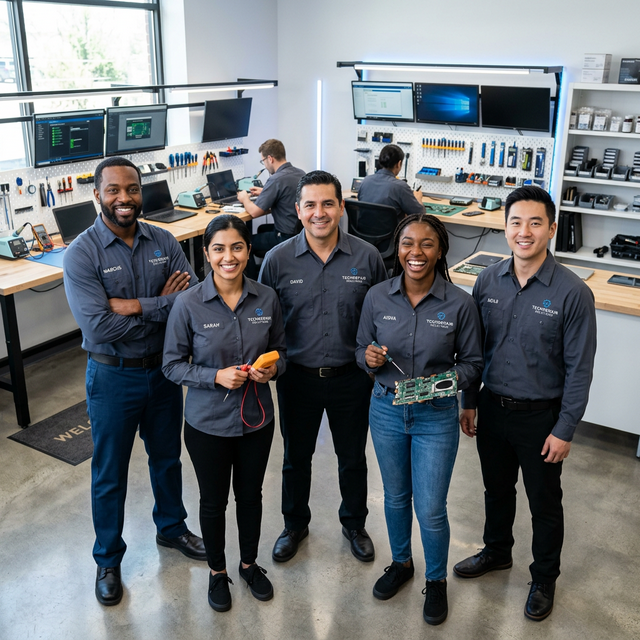

Missão
Oferecer soluções completas em assistência técnica com produtos de qualidade, atendimento humanizado e suporte eficiente, garantindo a satisfação plena dos nossos clientes.
Mais de 10 anos transformando problemas em soluções para os seus eletrônicos.
Somos uma equipe apaixonada por tecnologia e comprometida com a excelência no serviço de assistência técnica. Atendemos clientes residenciais e empresariais com o mesmo nível de dedicação e profissionalismo.
Nossa equipe é formada por técnicos certificados pelas principais fabricantes do mercado, garantindo que o seu equipamento seja tratado com o mais alto padrão de qualidade.

Oferecer soluções completas em assistência técnica com produtos de qualidade, atendimento humanizado e suporte eficiente, garantindo a satisfação plena dos nossos clientes.
Ser a referência em assistência técnica e suporte para eletrônicos na região, reconhecidos pela confiança, qualidade e inovação nos serviços prestados.
Desde 2014 construindo uma reputação de excelência.
A TechFix nasceu em uma pequena oficina com a missão de oferecer consertos de qualidade a preços justos.
Inauguramos nosso novo espaço com laboratório completo e equipe especializada em múltiplas categorias de eletrônicos.
Obtivemos certificações das principais fabricantes do mercado, garantindo ainda mais qualidade e confiança nos reparos.
Mais de 2.400 clientes satisfeitos, equipe de 12 técnicos especializados e nota máxima nas avaliações online.